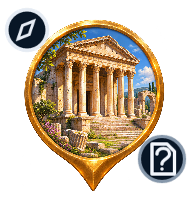
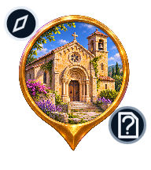
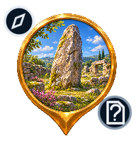
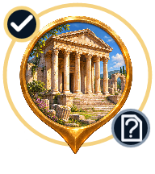
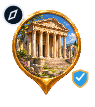
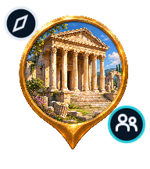
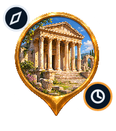
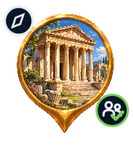

V2.2 · Images natives
Ces PNG de 64 × 72 points sont les fichiers fournis directement à Marker.image. Aucun assemblage de trois images dans le marqueur. Planche de contrôle, pas une capture iPhone.

Temple et vestigesMusée

Édifice religieuxPatrimoine industriel

Autre patrimoineÉtats réels conservés
À découvrir

Découvert et sélectionnéLe sceau d’import non vérifié reste présent, même après découverte.
Contrôle indépendant

Vérifié par la rédactionÉditorial à contrôler
Importé non vérifié

Communauté non contrôlée
Communauté en attente (privé)
Communauté vérifiéeExemples de variantes, aucune nouvelle vérification attribuée au catalogue.
Regroupement
▯▯▯Nlieux
Dans l’application, N est le nombre réel de membres du groupe. Toucher pour agrandir ou choisir un lieu.Dans Options de la carte → Rendu des lieux : version et nombres réels de lieux isolés et regroupements de la zone.